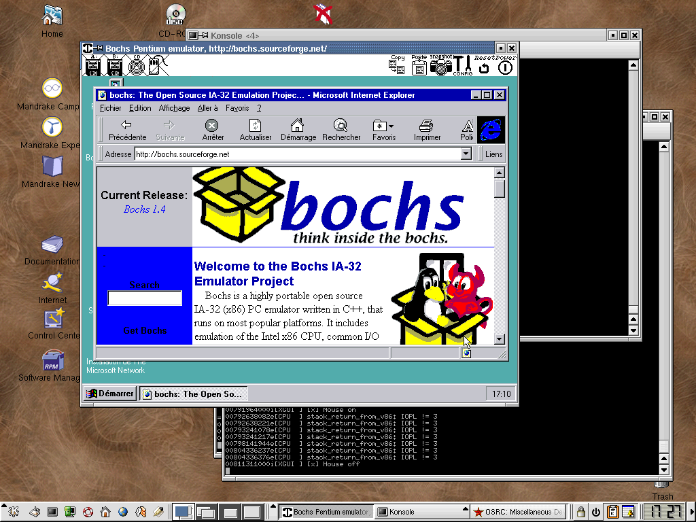
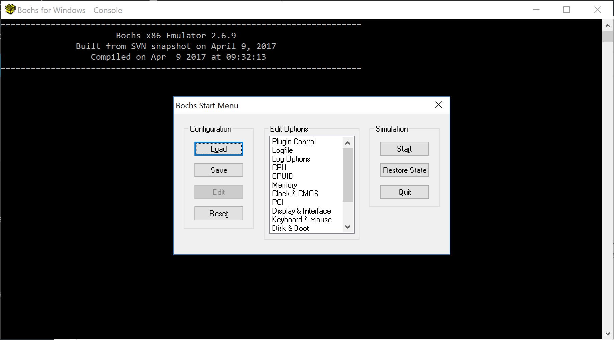
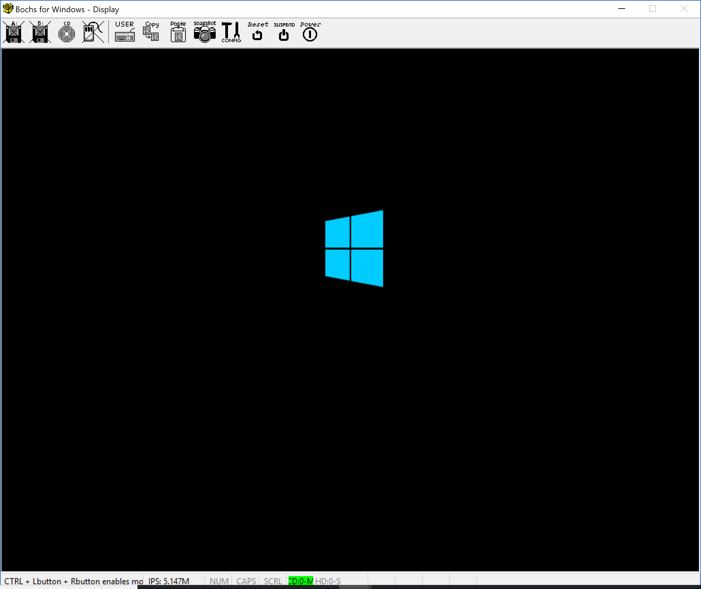

Introduction
Bochs is an x86 - x86-64 multiplatform emulator that provides emulation of CPU Instruction Fetching without using Hypervisor technologies like Intel’s VT-x and AMD-V.
One of the benefits of emulation rather than virtualization is that you can execute instructions of old discontinued CPU structures in modern CPU or run Intel’s instructions on an AMD CPU or vice versa, more than that Bochs developers try to make Bochs devices like virtualization software devices.They provide keyboard, speaker, cdrom, disk, floppy, network device and etc.
Emulation is somehow like high-level programming languages like Java when using its bytecode or .Net Framework when using MSIL.
From IBM :
Java technology implements just-in-time (JIT) compilation to work around some of the inefficiencies, similar to Transmeta and numerous other emulation solutions (including QEMU, another platform emulation solution similar to Bochs). But Bochs also achieves efficient emulation (up to 100 million instructions per second [MIPS] on a modern processor) while also being portable. Bochs was developed purely in the
C++language for interpreted x86 instruction execution and platform emulation.
Because of instructions doesn’t directly execute on a Bochs machine, It is too much slower than CPU on virtualization so Bochs comes at the cost of performance.
Even though Bochs is really slow but it gives us other benefits that worths using the emulator like Instrumenting an operating system kernel which I described in Bochs Emulator - Debug & Instrument.
Bochs is an open-source program and in order to use some features like instrumentation and other optimization you need to compile it by your self, more than that you can edit the source code for researching because Bochs have lots of cool features that can be manipulated in order to better optimize your needs, so I prefer to compile it rather than downloading its binaries.
ok, that’s enough for introduction, let’s see how to “make” it!
In the rest of topic, I’m trying to build bochs-2.9.
Configure & Make in OS X
First, you need to download the project source code, you can find it here.
The documentation uses the following syntax in order to build the Bochs on OS X machines
1
2
./configure
make
But it gives me the following error after running “make”:
1
2
3
4
5
6
7
8
9
10
11
12
13
14
15
16
17
18
19
20
21
22
23
Sinas-MacBook-Pro:bochs-2.6.9 sina$ make
cd iodev && \
/Library/Developer/CommandLineTools/usr/bin/make libiodev.a
g++ -c -I.. -I./.. -I../instrument/stubs -I./../instrument/stubs -fpascal-strings -fno-common -Wno-four-char-constants -Wno-unknown-pragmas -Dmacintosh -D_FILE_OFFSET_BITS=64 -D_LARGE_FILES devices.cc -o devices.o
...
cdrom_osx.cc:194:18: error: assigning to 'char *' from incompatible type
'const char *'
if ((devname = strrchr(devpath, '/')) != NULL) {
^~~~~~~~~~~~~~~~~~~~~
cdrom_osx.cc:231:15: warning: comparison between NULL and non-pointer
('io_registry_entry_t' (aka 'unsigned int') and NULL) [-Wnull-arithmetic]
if (service == NULL) {
~~~~~~~ ^ ~~~~
cdrom_osx.cc:291:30: warning: implicit conversion of NULL constant to
'mach_port_t' (aka 'unsigned int') [-Wnull-conversion]
mach_port_t masterPort = NULL;
~~~~~~~~~~ ^~~~
0
4 warnings and 1 error generated.
make[1]: *** [cdrom_osx.o] Error 1
make: *** [iodev/hdimage/libhdimage.a] Error 2
that’s a weird error! I don’t know why this happens but I simply go to “cdrom_osx.cc” file and change the following line:
1
if ((devname = strrchr(devpath, '/')) != NULL) {
to:
1
if ((devname = (char*)strrchr(devpath, '/')) != NULL) {
And simply ignore this problem.
Let’s “make” it again.
1
2
3
4
5
6
7
8
9
10
11
12
13
14
15
16
17
18
19
20
21
22
23
24
25
26
27
28
29
30
31
32
33
34
35
36
37
38
39
40
41
42
43
44
45
46
47
48
49
50
51
52
53
54
55
56
57
58
59
60
61
62
63
64
65
66
67
68
69
70
71
72
73
74
75
76
77
78
79
80
81
82
83
84
Sinas-MacBook-Pro:bochs-2.6.9 sina$
...
Sinas-MacBook-Pro:bochs-2.6.9 sina$
...
carbon.cc:155:1: error: unknown type name 'CIconHandle'
CIconHandle bx_cicn[BX_MAX_PIXMAPS];
^
carbon.cc:269:3: error: use of undeclared identifier 'GetWindowPortBounds'
GetWindowPortBounds(myWindow, &box);
^
carbon.cc:270:13: error: use of undeclared identifier 'blackColor'
BackColor(blackColor);
^
carbon.cc:271:3: error: use of undeclared identifier 'EraseRect'
EraseRect(&box);
^
carbon.cc:310:3: error: use of undeclared identifier 'GetWindowPortBounds'
GetWindowPortBounds(myWindow, &box);
^
carbon.cc:401:10: error: use of undeclared identifier 'FindWindow'
part = FindWindow(wheresMyMouse, &whichWindow);
^
carbon.cc:407:5: error: use of undeclared identifier 'MenuSelect'
MenuSelect(wheresMyMouse);
^
carbon.cc:443:7: error: use of undeclared identifier 'CreateStandardAlert'
CreateStandardAlert(
^
carbon.cc:450:7: error: use of undeclared identifier 'RunStandardAlert'
RunStandardAlert(
^
carbon.cc:474:11: error: use of undeclared identifier 'IsWindowVisible'
if (IsWindowVisible(toolwin))
^
carbon.cc:488:11: error: use of undeclared identifier 'IsWindowVisible'
if (IsWindowVisible(toolwin) || menubarVisible)
^
carbon.cc:492:13: error: use of undeclared identifier 'IsWindowVisible'
if (IsWindowVisible(toolwin))
^
carbon.cc:499:14: error: use of undeclared identifier 'IsWindowVisible'
if (!IsWindowVisible(toolwin))
^
carbon.cc:535:3: error: use of undeclared identifier 'StopAlert'
StopAlert(200, NULL);
^
carbon.cc:543:3: error: use of undeclared identifier 'InitCursor'
InitCursor();
^
carbon.cc:553:5: error: no matching function for call to 'NewAEEventHandlerUPP'
NewAEEventHandlerUPP(QuitAppleEventHandler), 0, false);
^~~~~~~~~~~~~~~~~~~~
/System/Library/Frameworks/CoreServices.framework/Frameworks/AE.framework/Headers/AEDataModel.h:2730:65: note:
candidate function not viable: no known conversion from 'OSErr (const
AppleEvent *, AppleEvent *, SInt32)' (aka 'short (const AEDesc *, AEDesc
*, int)') to 'AEEventHandlerProcPtr' (aka 'short (*)(const AEDesc *,
AEDesc *, void *)') for 1st argument
inline AEEventHandlerUPP NewAEEve...
^
carbon.cc:555:5: warning: 'ExitToShell' is deprecated: first deprecated in macOS
10.9 [-Wdeprecated-declarations]
ExitToShell();
^
/System/Library/Frameworks/ApplicationServices.framework/Frameworks/HIServices.framework/Headers/Processes.h:725:6: note:
'ExitToShell' has been explicitly marked deprecated here
void ExitToShell( void ) __attribute__ (( __noreturn__ )) AVAILABLE_MA...
^
carbon.cc:575:5: error: use of undeclared identifier 'GetGWorld'
GetGWorld(&savePort, &saveDevice);
^
carbon.cc:605:56: error: use of undeclared identifier 'keepLocal'
&srcTileRect, disp_bpp>8 ? NULL : gCTable, NULL, keepLocal, gMyBuf...
^
carbon.cc:609:5: error: use of undeclared identifier 'SetGWorld'
SetGWorld(gOffWorld, NULL);
^
fatal error: too many errors emitted, stopping now [-ferror-limit=]
1 warning and 20 errors generated.
make[1]: *** [carbon.o] Error 1
make: *** [gui/libgui.a] Error 2
That’s too bad! 20 errors.
I googled it and understand that this problem happens because the libraries that it used for it’s GUI is no longer available for OS X, so the problem can be solved using SDL instead.
Now you need to download and install SDL.
1
brew install sdl
Then compile the Bochs using the following syntax.
1
2
./configure --with-sdl
make
Even though this problem is reported to Bochs developers but it seems none of them uses OS X, I’m sure this problem will be solved in the future versions of Bochs.
Finally, it compiles without error, but actually, I want to use more features of Bochs like disasm and debug features and instrumentation and etc.
I use the following syntax to compile the Bochs:
1
2
./configure --enable-cpu-level=6 --enable-x86-64 --enable-vmx=2 --enable-pci --enable-usb --enable-usb-ohci --enable-debugger --enable-disasm --with-sdl --enable-instrumentation="instrument/stubs" --enable-cdrom
make
If there isn’t any problem, you can now run the Bochs.
This time, when I run Bochs it gives me the following error:
1
2
3
4
5
6
7
8
9
10
11
12
13
14
15
16
Sinas-MacBook-Pro:bochs-2.6.9 sina$ bochs
========================================================================
Bochs x86 Emulator 2.6.9
Built from SVN snapshot on April 9, 2017
Compiled on Apr 15 2018 at 14:58:06
========================================================================
00000000000i[ ] BXSHARE not set. using compile time default '/usr/local/share/bochs'
00000000000i[ ] reading configuration from .bochsrc
00000000000e[ ] .bochsrc:187: wrong value for parameter 'model'
00000000000p[ ] >>PANIC<< .bochsrc:187: cpu directive malformed.
00000000000e[SIM ] notify called, but no bxevent_callback function is registered
========================================================================
Bochs is exiting with the following message:
[ ] .bochsrc:187: cpu directive malformed.
========================================================================
00000000000i[SIM ] quit_sim called with exit code 1
Actually, this problem happens because the CPU architecture that selected in “.bochsrc” file is not available in the current built.
You should run the following command in order to get the supported CPUs:
1
bochs --help cpu
Then I modified the following line:
1
cpu: model=core2__penryn__t9600, count=1, ips=50000000, reset__on__triple__fault=1, ignore__bad__msrs=1, msrs="msrs.def"
change the “core2_penryn_t9600” to e.g “core_duo_t2400_yonah”.
Running bochs again produces such error :
1
2
3
4
5
6
7
8
9
10
11
12
13
14
15
16
Sinas-MacBook-Pro:bochs-2.6.9 sina$ bochs
========================================================================
Bochs x86 Emulator 2.6.9
Built from SVN snapshot on April 9, 2017
Compiled on Apr 15 2018 at 14:58:06
========================================================================
00000000000i[ ] BXSHARE not set. using compile time default '/usr/local/share/bochs'
00000000000i[ ] reading configuration from .bochsrc
00000000000e[ ] .bochsrc:718: ataX-master/slave CHS set to 0/0/0 - autodetection enabled
00000000000p[ ] >>PANIC<< .bochsrc:914: Bochs is not compiled with lowlevel sound support
00000000000e[SIM ] notify called, but no bxevent_callback function is registered
========================================================================
Bochs is exiting with the following message:
[ ] .bochsrc:914: Bochs is not compiled with lowlevel sound support
========================================================================
00000000000i[SIM ] quit_sim called with exit code 1
It is because we didn’t configure Bochs for preparing sound device and we use “sound” option in “.bochsrc”, in order to build with sound support you can use one of the “–enable-sb16” or “–enable-es1370” in configuring and “make” again but I rather remove the following line from “.bochsrc” to build it again.
1
sound: driver=default, waveout=/dev/dsp. wavein=, midiout=
Now it runs without error.
1
2
3
4
5
6
7
8
9
10
11
12
13
14
15
16
17
18
19
20
21
22
23
24
25
26
27
28
29
30
31
32
Sinas-MacBook-Pro:bochs-2.6.9 sina$ bochs
========================================================================
Bochs x86 Emulator 2.6.9
Built from SVN snapshot on April 9, 2017
Compiled on Apr 15 2018 at 14:58:06
========================================================================
00000000000i[ ] BXSHARE not set. using compile time default '/usr/local/share/bochs'
00000000000i[ ] reading configuration from .bochsrc
00000000000e[ ] .bochsrc:718: ataX-master/slave CHS set to 0/0/0 - autodetection enabled
00000000000e[ ] .bochsrc:925: wrong value for parameter 'mode'
00000000000e[PCSPK ] .bochsrc:925: unknown parameter for speaker ignored.
------------------------------
Bochs Configuration: Main Menu
------------------------------
This is the Bochs Configuration Interface, where you can describe the
machine that you want to simulate. Bochs has already searched for a
configuration file (typically called bochsrc.txt) and loaded it if it
could be found. When you are satisfied with the configuration, go
ahead and start the simulation.
You can also start bochs with the -q option to skip these menus.
1. Restore factory default configuration
2. Read options from...
3. Edit options
4. Save options to...
5. Restore the Bochs state from...
6. Begin simulation
7. Quit now
Please choose one: [6]
Building Bochs on Windows
To build Bochs for Windows you have multiple options, like building with Cygwin or MinGW but I’d rather build Bochs with Visual Studio instead.
Download (bochs-x.x.x-msvc-src.zip) latest version from here.
Extract the bochs-x.x.x-msvc-src.zip go to vs2013 and open “bochs.sln”.
You need to enable some of the features before building the solution. (It’s like ./configure –enable-x in OS X and Linux)
Go to “config.h” and modify it like this:
In order to enable debugging make sure your config file is :
1
2
3
4
#define BX__GDBSTUB 1
#define BX__DEBUGGER 1
#define BX__DISASM 1
#define BX__DEBUGGER__GUI 1
I also need Instrumentation so changed the following line:
1
#define BX__INSTRUMENTATION 1
make sure disable BX_SUPPORT_HANDLERS_CHAINING_SPEEDUPS because of some incompatibility issues.
1
#define BX__SUPPORT__HANDLERS__CHAINING__SPEEDUPS 0
Then trying to build and this time it gives me the following error:
1
unresolved external symbol ____imp____WSAStartup@8 referenced in function __main
And other such errors which are linking problems.
I add the following line to bxhub.cc :
1
#pragma comment(lib,"Ws2__32.lib")
That line solves the linking problems. If there isn’t any error then just build the solution.
Installing Windows on Bochs
Installing an operating system in Bochs is a little tricky, open bochs.exe (from what you built before.) then make sure that it starts without any problem (some systems have problem opening Bochs !).
Bochs uses an image file for the purpose of its hard disk, there is a tool called bximage.exe which creates such file for you.
Open bximage.exe :
1
2
3
4
5
6
7
8
9
10
11
12
13
14
15
========================================================================
bximage
Disk Image Creation / Conversion / Resize and Commit Tool for Bochs
$Id: bximage.cc 13069 2017-02-12 16:51:52Z vruppert $
========================================================================
1. Create new floppy or hard disk image
2. Convert hard disk image to other format (mode)
3. Resize hard disk image
4. Commit 'undoable' redolog to base image
5. Disk image info
0. Quit
Please choose one [0]
Then choose 1 (Create new floppy or hard disk image). In the second step choose hd for device type, growing for the next question and then choose how much space you need to allocate to your emulated machine.
In the last step specify a name and you’re good to go!
A complete result of bximage is like :
1
2
3
4
5
6
7
8
9
10
11
12
13
14
15
16
17
18
19
20
21
22
23
24
25
26
27
28
29
30
31
32
33
34
35
36
37
38
39
40
========================================================================
bximage
Disk Image Creation / Conversion / Resize and Commit Tool for Bochs
$Id: bximage.cc 13069 2017-02-12 16:51:52Z vruppert $
========================================================================
1. Create new floppy or hard disk image
2. Convert hard disk image to other format (mode)
3. Resize hard disk image
4. Commit 'undoable' redolog to base image
5. Disk image info
0. Quit
Please choose one [0] 1
Create image
Do you want to create a floppy disk image or a hard disk image?
Please type hd or fd. [hd] hd
What kind of image should I create?
Please type flat, sparse, growing, vpc or vmware4. [flat] growing
Enter the hard disk size in megabytes, between 10 and 8257535
[10] 10000
What should be the name of the image?
[c.img] c.img
Creating hard disk image 'c.img' with CHS=20317/16/63
redolog : creating redolog c.img
redolog : Standard Header : magic='Bochs Virtual HD Image', type='Redolog', subtype='Growing', version = 2.0
redolog : Specific Header : #entries=32768, bitmap size=128, exent size = 524288 disk size = 10485522432
The following line should appear in your bochsrc:
ata0-master: type=disk, path="c.img", mode=growing
(The line is stored in your windows clipboard, use CTRL-V to paste)
Press any key to continue
After creating the image file, now you need to configure your Bochs machine.
Open the Bochs.exe and edit the memory option.

Set the memory size (megabytes) and host allocated size (megabytes) to a value greater than 32! I choose 1000.
Then edit CPU option > CPU Configuration to turion64_tyler or whatever supports x86-64, make sure to set a proper value for Emulated instructions per second (IPS). Press OK and edit Disk & Boot > ATA Channel > First HD/CD on channel 0. In this window set Type of ATA device to disk, set path or physical device name to the c.img (the file that is created previously by bximage), Type of disk image to growing, Cylinders to 20317, heads to 16, Sectors per track to 63.
Now go to another tab (Second HD/CD on channel 0) and set the type of disk to cdrom, Path or physical device name to the Windows ISO file.
For the last step go to Boot Options, set Boot drive #1 to disk and Boot drive #2 to cdrom.
That’s it, make sure to save your configuration to avoid doing these steps again and then press start.
Select continue and don’t ask again if a prompt comes to the screen then restart the machine and you should see the Windows installation.
If you see the following picture, then you’re done.

By now, you should’ve configured Bochs, Let’s use more features of Bochs in the next post. (Bochs Emulator - Debug & Instrument).
References
- [Bochs User Manual] (http://bochs.sourceforge.net/doc/docbook/user/index.html)
- [Platform emulation with Bochs] (https://www.ibm.com/developerworks/library/l-bochs) - [PDF Version] (https://www.ibm.com/developerworks/library/l-bochs/l-bochs-pdf.pdf)
- [Wikipedia - Bochs] (https://en.wikipedia.org/wiki/Bochs)
Comments powered by Disqus.